LW = 'LineWidth'; MS = 'MarkerSize'; FS = 'FontSize'; format long
17.1 Introduction
Spherefun is a new part of Chebfun for computing with functions defined on the surface of the unit sphere. It was created by Alex Townsend, Heather Wilber, and Grady Wright.
In what follows "the sphere" is more precisely the surface of the unit 2-sphere in 3 dimensions, $\mathbb{S}^2$.
A function on the sphere can be expressed in terms of Cartesian coordinates $(x,y,z)$ or spherical coordinates $(\lambda,\theta)$, where $\lambda$ is the azimuth (longitude) angle and $\theta$ is the polar (or zenith) angle. The transformation between these two coordinate systems in Spherefun is given by \begin{equation} x = \cos\lambda\sin\theta, \quad y = \sin\lambda\sin\theta, \quad z = \cos\theta,\qquad (\lambda,\theta)\in[-\pi,\pi]\times[0,\pi]. \label{eq:sphCoords} \end{equation}
Spherefun allows functions to be constructed using either coordinate system. For example, the function $f(x,y,z) = (1 + (x+1/\sqrt{2})^2 + z^2)$ on the sphere can be constructed as follows:
f = spherefun( @(x,y,z) 1./(1 + (x+1/sqrt(2)).^2 + z.^2) ); plot( f )
Or, equivalently, the function can be constructed in spherical coordinates as
g = spherefun( @(lam,theta) 1./(1 + (cos(lam).*sin(theta)+1/sqrt(2)).^2 +...
cos(theta).^2) );
The result is the same up to machine precision:
norm( f - g, inf )
ans =
0
The constructed objects are called spherefuns:
f
f =
spherefun object
domain rank vertical scale
unit sphere 21 1
The output shows that $f$ is numerically of rank 21 (see the discussion below for what this means) and its vertical scale (an approximation to its maximum absolute value) is 1.
Many of the methods available as part of Spherefun can work in Cartesian or spherical coordinates. After construction, this is perhaps most useful for evaluation. For example, $(-1/\sqrt{2},1/\sqrt{2},0)$ in spherical coordinates defined above is $(3\pi/4,\pi/2)$. f or g can be evaluated at this point using either representation to get the exact value of $1$:
[ f(-1/sqrt(2), 1/sqrt(2), 0) f(3*pi/4, pi/2) ]
ans =
1 1
If the evaluation point is specified in Cartesian coordinates and does not lie on the sphere (to within a small tolerance), then an error is reported. If the evaluation point is numerically close to the sphere (up to rounding errors), then the evaluation point is projected on to the unit sphere.
Slices of the function along the coordinate planes intersecting the sphere can also be obtained, with the result being a chebfun. For example, f along the equator is obtained using spherical coordinates as
fequator = f(:,pi/2) plot(fequator)
fequator =
chebfun column (1 smooth piece)
interval length endpoint values trig
[ -3.1, 3.1] 73 0.92 0.92
vertical scale = 1
Cartesian coordinates can also be used to obtain slices of functions. For example, f along the plane $x=1/4$ intersecting the sphere is
fslice = f(0.25,:,:) plot(fslice)
fslice =
chebfun column (1 smooth piece)
interval length endpoint values trig
[ -3.1, 3.1] 61 0.52 0.52
vertical scale = 0.52
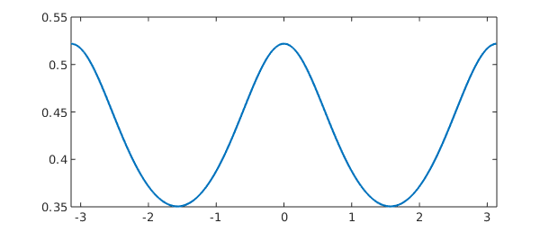
In the spirit of Chebfun, one can compute with spherefuns without worrying about the underlying discretization or how a particular algorithm is implemented. At every step we aim to achieve close to machine precision calculations, while compressing representations whenever possible.
Using object-oriented programming in MATLAB there are about one hundred commands that one can now perform on spherefuns.
17.2 Basic operations
Once we have a spherefun, we can execute a whole collection of commands. For example, the surface integral of $$ f(x,y,z) = 1 + x + y^2 + x^2 y + x^4 + y^5 + (xyz)^2 $$ is
f = spherefun( @(x,y,z) 1+x+y.^2+x.^2.*y+x.^4+y.^5+(x.*y.*z).^2 ); sum2( f )
ans = 19.388114662154155
This matches the exact value of $216\pi/35$ to 16 digits
abs( sum2( f ) - 216*pi/35 )
ans =
3.552713678800501e-15
The mean of $f$ is
mean2( f )
ans = 1.542857142857143
Since the surface area of the sphere is $4\pi$, the exact value of the mean of $f$ is
54/35
ans = 1.542857142857143
The global maximum of a function on the sphere can be computed with max2. For example, the maximum of $f(x,y,z) = 2\sinh(5xyz)$ is
f = spherefun( @(x,y,z) 2*sinh(5*x.*y.*z) ); maxf = max2( f )
maxf = 2.235548406627320
This matches the maximum of $2\sinh(5/3^{3/2})$ to nearly machine precision:
abs( maxf- 2*sinh(5*3^(-3/2)) )
ans =
1.776356839400250e-15
The method min2 similarly gives the global minimum. For the function above the global minimum is just the negative of the global maximum:
min2(f)
ans = -2.235548406627319
The zero contours of f-0.5 can be computed using roots
r = roots( f-0.5 );
Here is a plot of these contours on the surface of the sphere together with the function $f$
plot( f ), colorbar, hold on,
for k = 1 : size(r, 1)
plot3( r{k}(:,1), r{k}(:,2), r{k}(:,3), 'k-' , LW, 3 )
end
hold off
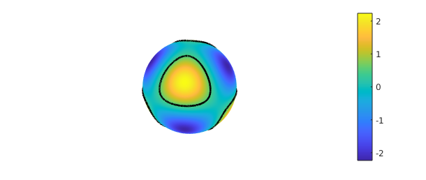
Contours of a function can also be visualized on the sphere using the
contour function. Here are the contours of $f$ from $-2$ to $2$ in
increments of $0.25$
contour(f,-2:0.25:2)
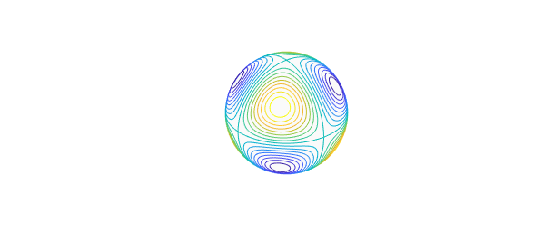
The landmasses of earth can be added to this, or any other plot of a spherefun, as follows:
hold on, spherefun.plotEarth('k-'), hold off, view([45 20]), snapnow
Differentiation of a function on the sphere with respect to spherical coordinates $(\lambda,\theta)$ can lead to singularities at the poles, even for smooth functions. For example, the simple function $f(\lambda,\theta) = \cos\theta$ (or $f(x,y,z) = z$) is smooth on the sphere, but the $\theta$-derivative, $\sin\theta$, is not smooth at either pole. This issue arises because the unit vector in the polar direction of the spherical coordinate system has a discontinuity at the north and south poles. To bypass this problem, we have chosen in Spherefun to define derivatives on the sphere in terms of the components that make up the surface gradient with respect to the Cartesian coordinate system. By defining derivatives in this fashion, we are guaranteed that any derivative of a smooth function will be smooth over the entire sphere.
The diff method is used to compute these derivatives. For example, the $x$ and $z$ components of the surface gradient of f are
dfdx = diff( f, 1 ); plot( dfdx ), title( 'x-component of the surface gradient', FS, 14 ) snapnow dfdz = diff( f, 3 ); plot(dfdz), title( 'z-component of the surface gradient', FS, 14 ) snapnow
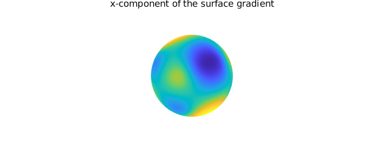
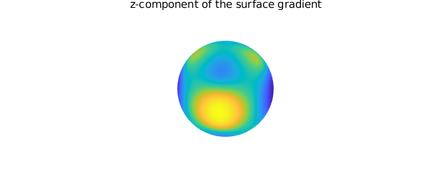
The surface Laplacian of f is
lapf = laplacian( f ); clf, plot( lapf )

Finally, as with chebfun and chebfun2 objects, we can add, subtract, and multiply simple spherefuns together to build more complicated ones.
g = spherefun( @(l,t) 2*cos(10*cos(l-0.25).*cos(l).*(sin(t).*cos(t)).^2) );
plot( g ), title('g', FS, 16), snapnow
h = f + g;
plot( h ), title('f + g', FS, 16), snapnow
h = f - g;
plot( h ), title('f - g', FS, 16), snapnow
h = f.*g;
plot( h ), title('f x g', FS, 16), snapnow
For a complete list of methods available for spherefuns type methods spherefun. Many of these are directly inherited from the abstract separableApprox class that was introduced in Chebfun version 5.3. It is fascinating to go through these commands and ask: "What is the analogous operation for functions on the sphere?" We certainly do not have all the answers yet.
17.3 Low rank function approximation
The initial plan for Spherefun was to apply the iterative Gaussian elimination algorithm for constructing low rank function approximations that forms the foundation of Chebfun2 [Townsend \& Trefethen 2013] to functions on the sphere. However, a direct application of this algorithm results in difficulties with some operations (e.g., differentiation) as important symmetries and regularity conditions at the north and south poles are not preserved. This led to the development of a new algorithm for representing functions on the sphere that combines the double Fourier sphere method and a symmetry preserving variant of iterative Gaussian elimination. We give a brief overview of algorithms here. For a full description of the mathematics behind Spherefun see [Townsend, Wilber, \& Wright 2015].
The surface of the sphere has no boundary and functions defined on the sphere are periodic. When transforming functions on the sphere to spherical coordinates $(\lambda,\theta)$ (see \eqref{eq:sphCoords}), they become $2\pi$-periodic in $\lambda$, but not periodic in $\theta$. The transformation introduces an artificial boundary at the north ($\theta=0$) and south ($\theta=\pi$) poles. The double Fourier sphere (DFS) method, first introduced by Merilees [Merilees 1973], uses symmetries inherent to spherical coordinates to recover the double-periodicity of functions on the sphere. The idea is to extend a function $f$ on $[-\pi,\pi]\times[0,\pi]$ in spherical coordinates to a related function $\tilde{f}$ on $[-\pi,\pi]\times[-\pi,\pi]$ as follows: \begin{equation} \tilde{f}(\lambda,\theta) = \begin{cases} g(\lambda+\pi,\theta), & (\lambda,\theta)\in[-\pi,0]\times[0,\pi],\cr h(\lambda,\theta), & (\lambda,\theta)\in[0,\pi]\times[0,\pi],\cr g(\lambda,-\theta), & (\lambda,\theta)\in[0,\pi]\times[-\pi,0],\cr h(\lambda+\pi,-\theta), & (\lambda,\theta)\in[-\pi,0]\times[-\pi,0], \end{cases} \label{eq:BMCsphere} \end{equation} where $g(\lambda,\theta)=f(\lambda-\pi,\theta)$ and $h(\lambda,\theta)=f(\lambda,\theta)$ for $(\lambda,\theta)\in[0,\pi]\times[0,\pi]$. The new function $\tilde{f}$ is $2\pi$-periodic in $\lambda$ and $\theta$, and is constant along the lines $\theta=0$ and $\theta=\pm \pi$, corresponding to the poles. Assuming $f$ is a smooth function, the extended function $\tilde{f}$ can be represented in a double Fourier (or trigonometric) series, \begin{equation} \tilde{f}(\lambda,\theta) = \sum_{j=-\infty}^{\infty}\sum_{k=-\infty}^{\infty} \widehat{X}_{jk} e^{ij\theta} e^{ik\lambda}, \label{eq:2DFourierExpansion} \end{equation} which gives the DFS method its name. Note that the Fourier coefficients will satisfy certain properties based on the symmetries of the extension \eqref{eq:BMCsphere} [Yee 1980].
Spherefun uses a symmetry preserving variant of iterative Gaussian
elimination to construct low rank approximations to $\tilde{f}$
[Townsend, Wilber, \& Wright 2015]. The result of this algorithm is a
rank $K$ approximation to $\tilde{f}$ of the form
\begin{align}
\tilde{f}(\lambda,\theta) \approx \sum_{j=1}^K d_j
c_j(\theta)r_j(\lambda),
\end{align}
where each rank 1 function $c_j(\theta)r_j(\lambda)$ satisfies the
symmetry of the DFS extension \eqref{eq:BMCsphere} to infinite
precision. This is fundamental for making operations such as
differentiation well-posed and numerically stable. The functions
$r_j(\lambda)$ and $c_j(\theta)$ are constructed from samples of
$\tilde{f}$ along horizontal and vertical "slices", respectively, of
the rectangular domain $[-\pi,\pi]\times[-\pi,\pi]$. Since $\tilde{f}$
is periodic along these slices, $r_j(\lambda)$ and $c_j(\theta)$ are
represented by trigonometric interpolants
(or trigfuns; see Chapter 11).
To illustrate the representation, consider the function $f(x,y,z) = \cos(\cosh(5x z) - 10y)$:
f = spherefun( @(x,y,z) cos(cosh(5*x.*z)-10*y) )
f =
spherefun object
domain rank vertical scale
unit sphere 37 1
Internally, the DFS method is applied to $f$ to obtain $\tilde{f}$ and this function is then approximated to nearly machine precision using a rank $K=37$ approximant. The slices (also called the `skeleton') where the function is sampled during the construction process can be visualized using
plot( f ), title('f', FS, 16), view([-105 10]), snapnow, clf
plot( f, '.-', MS, 20 ), view([-105 10])
title('Skeleton used for constructing f', FS, 16)
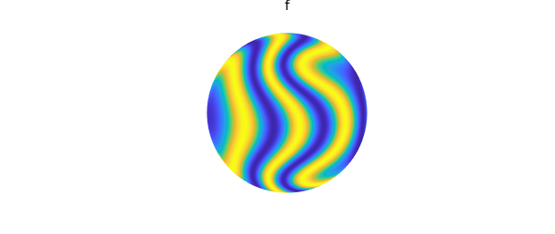
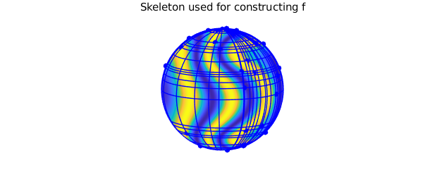
Here are the trigonometric coefficients for the rows $r_j(\lambda)$ and columns $c_j(\theta)$ quasimatrices making up the approximation of $\tilde{f}$
plotcoeffs( f ) ylim([1e-20 1e2])
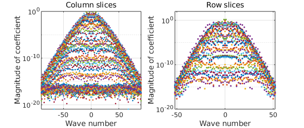
An approximation to the bivariate Fourier coefficients in the double
trigonometric expansion \eqref{eq:2DFourierExpansion} can also be
computed rapidly from f:
X = coeffs2( f );
[ m, n ] = length( f );
[mm, nn] = meshgrid( -floor(m/2):ceil(m/2)-1, -floor(n/2):ceil(n/2)-1);
clf, surf( mm, nn, log10( abs( X ) ) ), axis tight
title('Bivariate Fourier coefficients', FS, 16)
xlabel('k', FS, 16), ylabel('j', FS, 16)
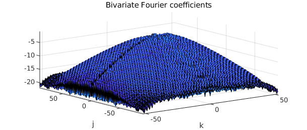
There is an important byproduct of the low rank approximation algorithm that can be spied in the skeleton plot above showing the pivots. If one were to use a tensor product method to reconstruct $f$, then any sampling grid conducive to fast periodic approximations would be artificially clustered near the north and south poles, resulting in an oversampling of $f$ in these regions. The data-driven, highly adaptive nature of the low rank function approximation method avoids these oversampling issues. The plot below illustrates this by comparing the samples of $f$ required by the low rank algorithm to the samples required by a full tensor product method to achieve the same accuracy. The plots are viewed from the south pole to illustrate the full clustering of the tensor product method (a similar picture results for the north pole).
clf, plot( f, '-' ), view( [0 -90] )
title('Low rank function samples', FS, 16), snapnow
[ m, n ] = length( f );
[ LL, TT ] = meshgrid( linspace(-pi, pi, n+1), linspace(0, pi, m/2+1) );
XX = cos(LL).*sin(TT);
YY = sin(LL).*sin(TT);
ZZ = cos(TT);
clf, surf(XX, YY, ZZ, 1+0*XX, 'FaceColor', [1 1 0.8], 'EdgeColor', [0 0 1])
view([0 -90]), axis([-1 1 -1 1 -1 1]), axis equal,
title('Tensor product function samples', FS, 16)
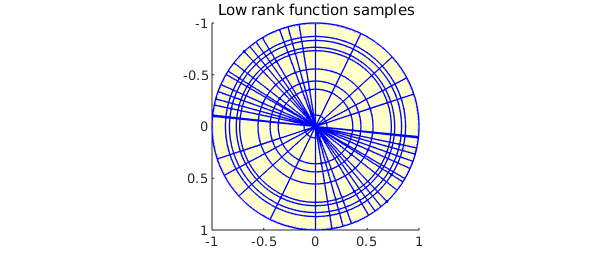
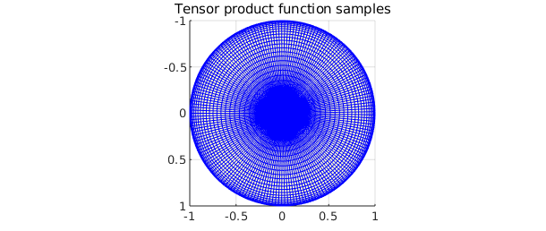
The Spherefun constructor accepts a few optional inputs that allow one to experiment with low rank approximants. The rank of the approximant that results from the Gaussian elimination algorithm can be fixed at a specifed value. For example, we can construct a rank 18 approximant of $f(x,y,z) = \cos(\cosh(5x z) - 10y)$, instead of a rank 37 approximant as
f18 = spherefun( @(x,y,z) cos(cosh(5*x.*z)-10*y), 18 ) plot(f18)
f18 =
spherefun object
domain rank vertical scale
unit sphere 18 1
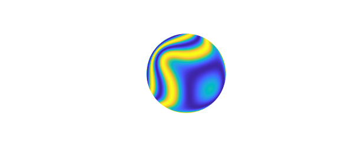
Visually, this representation is identical to $f$, but this approximant is only accurate to about 3 digits.
norm(f-f18)
ans = 0.002293417749073
Additionally, the tolerances used during the construction process can loosened from machine epsilon to achieve achieve a more compressed representation of the function, albeit at the cost of a less accurate approximation. For example, we can loosen the tolerances in the construction of $f$ defined above to $10^{-8}$ as follows:
g = spherefun( @(x,y,z) cos(cosh(5*x.*z)-10*y), 'eps', 1e-8 )
g =
spherefun object
domain rank vertical scale
unit sphere 22 1
This gives a rank 22 approximant. The lengths of the rows and columns of this approximant (i.e. the number of trigonometric coefficients used in the approximation) compared to the original are
[mf,nf] = length(f); [mg,ng] = length(g); [mf mg] [nf ng]
ans = 105 61 ans = 177 89
These modifications to the rank of the approximant and tolerances used seem to have more dramatic effects on the compression achieved when the functions are smooth.
17.4 Spherical harmonics
A natural question that may come to mind is "Why not use spherical harmonic expansions?" One may think that spherical harmonic expansions are the right mathematical tool as they are the spherical analog of Fourier series. Yet, Spherefun does not use them at all. This is because of the difficulty of computing a spherical harmonic expansion of a function, despite three decades of research on fast algorithms. The current state-of-the-art algorithms have a huge precomputation cost that makes highly adaptive discretizations computationally infeasible.
Because of the prevalence of spherical harmonics in many areas of science and engineering, we provide a method for constructing them in Spherefun. For example, the spherical harmonic $Y_{\ell}^m$ of degree $\ell=6$ and order $m=-3$ is constructed as
Y = spherefun.sphharm(6, -3);
Here $Y$ is represented to machine precision as a rank 1 function using the DFS method described above. It can now be used in any subsequent computations. For example, we can verify that it is indeed an eigenfunction of the surface Laplacian (in this case with eigenvalue $-6\times 7 = -42$)
plot( -42*Y ), title('-30Y_{6}^{-3}', FS, 16), snapnow
plot( laplacian( Y ) ), title('\Delta Y_{6}^{-3}', FS, 16), snapnow
norm( Y - (-1/42)*laplacian( Y ), inf)
ans =
0
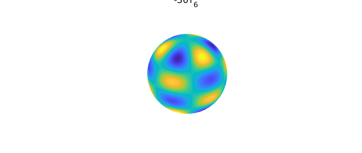
The $\ell=6$, $m=-3$ coefficient in the spherical harmonic expansion of $f(x) = \cos(10x)\sin(10yz)$ is
sum2( spherefun( @(x,y,z) cos(10*x).*sin(10*y.*z) ).*Y )
ans = 0.543044352049850
Spherical harmonics of other degrees and orders can similarly be constructed and manipulated.
17.5 Poisson's equation
Spherefun also has a command for solving Poisson's equation on the sphere. For example, to solve $$ \nabla^2 u = f, \qquad \int_{\mathbb{S}^2} u\,d\Omega = 0, $$ where $f = Y_{6}^{3}$, one can use these Spherefun commands:
f = spherefun.sphharm(6, 3); % forcing term u = spherefun.poisson(f, 0, 100, 100); % fast Poisson solver
Here Poisson's equation was solved with a discretization size of $100\times 100$. The exact solution is $-(1/42)Y_6^3$ and has been recovered to machine precision:
norm( u - -(1/42)*f, inf )
ans =
0
Provided that the right-hand side $f$ satisfies the compatibility condition
$\int_{\mathbb{S}^2} f\, d\Omega = 0$, the solution to the above Poisson
problem is unique up to a constant. One specifies the value of this
constant as the second input argument to poisson. Here is a second
example using a discretization size of $1000\times 1000$ and a value of
1 for this constant.
f = spherefun( @(x,y,z) sin(100*x.*y.*z) ); % forcing term u = spherefun.poisson(f, 1, 1000, 1000); % fast Poisson solver plot( u )
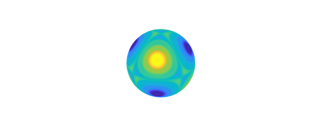
See [Townsend, Wilber, & Wright 2015] for a description of the fast algorithm used for solving Poisson's equation.
17.6 Filtering
Low-pass isotropic filtering for functions on the sphere can be performed using the command gaussfilt. For example, consider the spherefun constructed from random data on the sphere, given on a $101$-by-$200$ equally spaced grid of points in spherical coordinates
rng(71) F = randn(101,200); F(1,:) = mean(F(1,:)); F(101,:) = mean(F(101,:)); f = spherefun(F); plot(f), colorbar
We can smooth f as follows:
ff = gaussfilt(f, 180*pi/180); plot(ff), colorbar
Mathematically, the gaussfilt command amounts to convolving f with a Gaussian kernel. This is implemented by numerically solving the diffusion equation on the sphere with f as the initial condition. The second input argument of gaussfilt is an optional parameter $\sigma$ that determines the length scale (as measured in radians at the equator of the unit sphere) at which the smoothing occurs. In the above example, this is set to $10\pi/180$, which corresponds to smoothing at a scale of 10 degrees.
17.7 Vector-valued functions: Spherefunv
Vector valued functions on the sphere and surface vector calculus operations are supported through Spherefunv. For example, the surface gradient of a spherefun returns a spherefunv object:
f = spherefun.sphharm(6,0) + sqrt(14/11)*spherefun.sphharm(6,5); g = grad( f ); clf, plot( f ), hold on quiver( g ), hold off
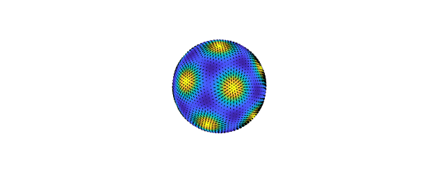
Spherefunv objects consist of three spherefuns, which represent the vector-valued function in the Cartesian coordinate system
g
g =
spherefunv object (Column vector) containing
spherefun object
domain rank vertical scale
unit sphere 3 4.8
spherefun object
domain rank vertical scale
unit sphere 3 5
spherefun object
domain rank vertical scale
unit sphere 2 5.3
The components are ordered as $x$, $y$, then $z$. This choice of coordinate system is common in applications since then the components of the vector field will be smooth on the sphere. Using spherical coordinates is a bad idea for the reasons discussed above: the unit vector in the polar direction of the spherical coordinate system has a discontinuity at the north and south poles.
Many of the operations for vector valued functions are supported. For example, suppose $\psi$ is the following stream function for flow field (known as the Rosby-Haurwitz "wave number 4" stream function)
psi = spherefun( @(lam,th) -cos(th) + cos(th).*sin(th).^4.*cos(4*lam) );
The surface curl of $\psi$ gives a field that is tangent to the level curves of $\psi$.
u = curl( psi ); plot( psi ), hold on, quiver( u ), hold off
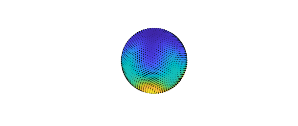
The vorticity represents the local spinning motion of the field.
omega = vorticity( u ); plot( omega ), hold on, quiver( u ), hold off
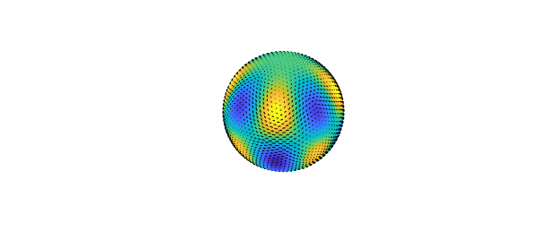
The divergence of the field is
delta = div( u );
Since $\mathbf{u} = \nabla \times \psi$, the field has zero divergence
norm( delta, inf )
ans =
0
For a complete list of methods available in Spherefunv type methods spherefunv.
References
[Merilees 1973] P. E. Merilees, The pseudospectral approximation applied to the shallow water equations on a sphere, Atmosphere, 11 (1973), pp. 13-20.
[Townsend & Trefethen 2013] A. Townsend and L. N. Trefethen, An extension of Chebfun to two dimensions, SIAM J. Sci. Comp, 35 (2013), pp. C495-C518.
[Townsend, Wilber, & Wright 2015] A. Townsend, H. Wilber, and G. Wright, Computing with functions in spherical and polar geometries I. The sphere. SIAM J. Sci. Comput., Accepted, 2016.
[Yee 1980] S. Y. K. Yee, Studies on Fourier series on spheres, Mon. Wea. Rev., 108 (1980), pp. 676-678.